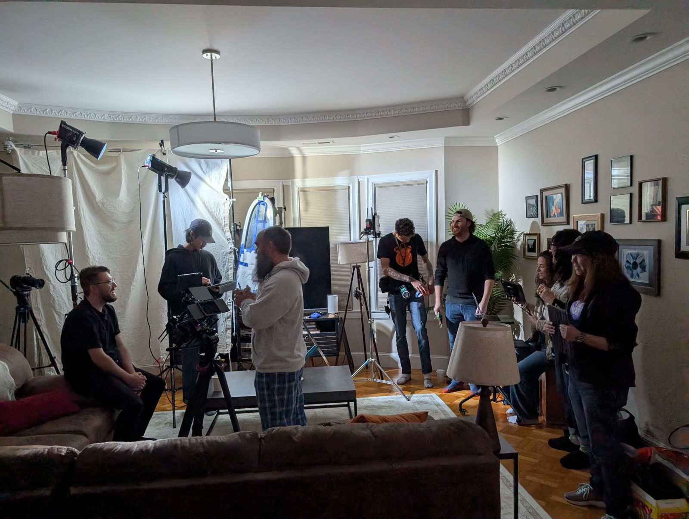
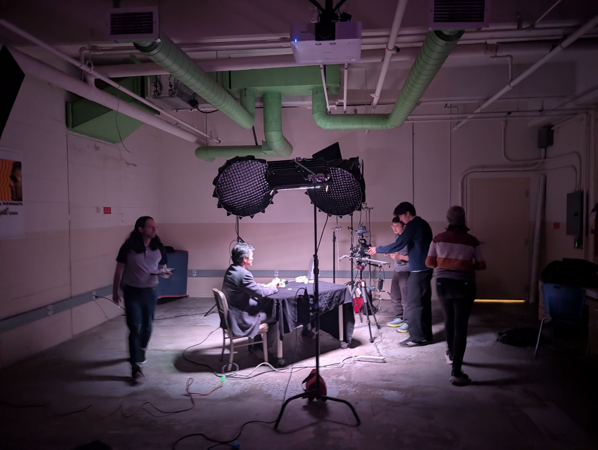
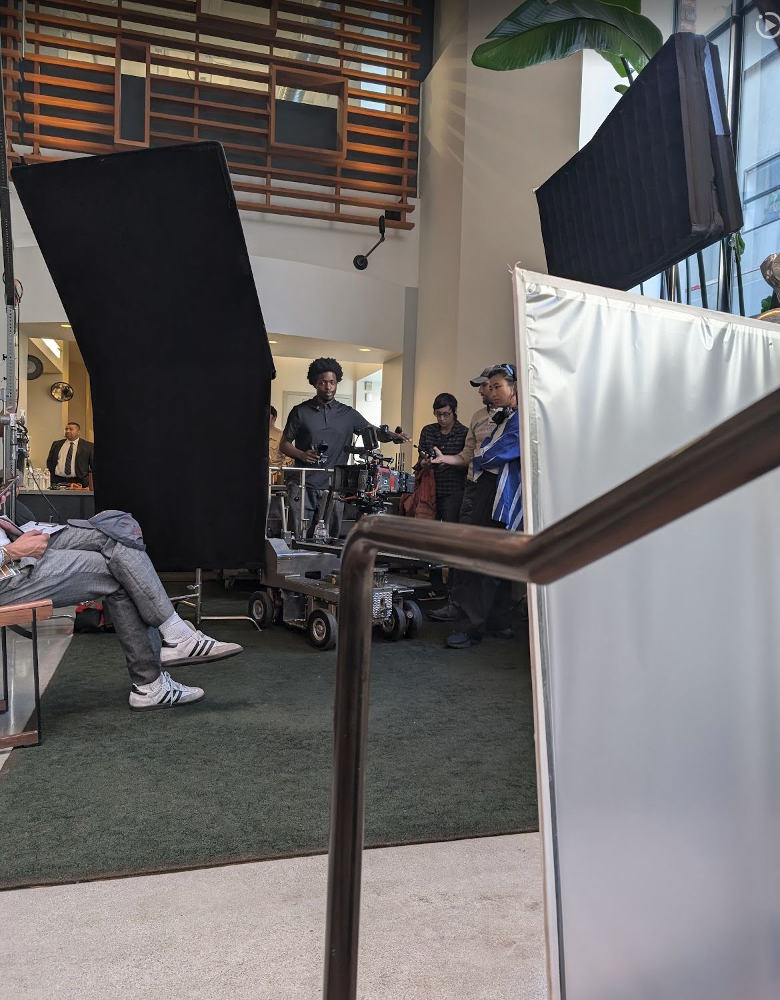
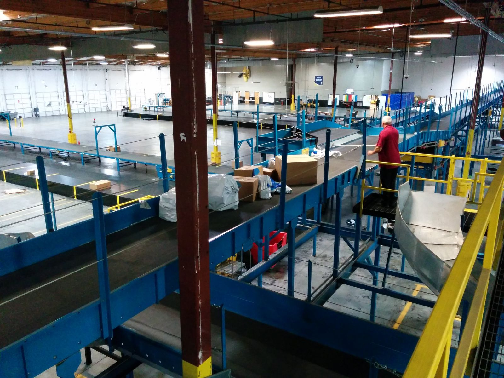
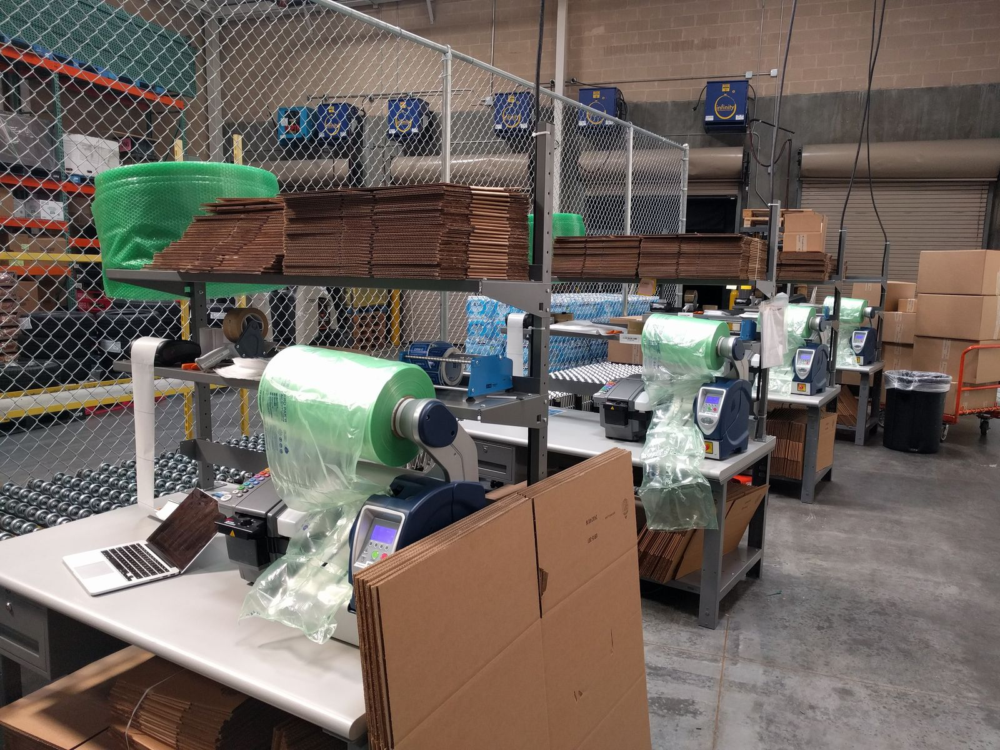
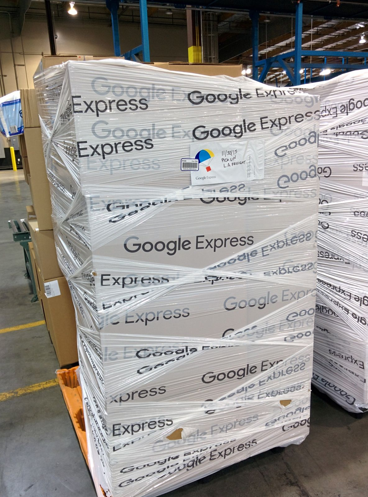

what i've done
Most of what I have done for a living comes down to the same job. Something real has to happen, with people, against a clock, in the physical world, and someone has to make it all line up. I have done that job on film sets, with a shopping network, with mapping vans and camera planes, with self driving cars, and on a farm. This page is the record, newest first, with some photos I took along the way.
Film and media production
Since 2022 I have been working in film and media production while finishing a film production degree at City College of San Francisco. I was production manager on the short film Slumped Over Man, handled production logistics on an AMEX shoot with Guy Raz, and ran safety and checklist protocols during high speed filming for Hotbed. The job is still logistics, scheduling, and keeping people and material in the right place at the right time, just closer to the thing being made.



Google Shopping Express, from pilot to wind-down
Google Shopping Express is the biggest single thing I have been part of. I joined before the public launch and built the field operations team from zero to thirty operators. I owned the packaging program, taking the grocery bag from design through vendor qualification and production, and the vendor agreements I set up brought the bag from $1.50 to $0.50 per unit. I ran the San Francisco hub, where a revised capacity model cut labor cost by 35 percent, and I opened the Atlanta office for the Southeast expansion. The procurement practices I built carried the operation from about 200 orders a day to about 5,000.
The last chapter was the hardest one. As PMO Program Manager I led the shutdown of the ship from store operation and the migration to merchant direct fulfillment, which removed $500M in costs and kept the shopping network running while the model underneath it changed.



Sealable Bag Assembly, US 2014/0294322 A1
The Google Shopping Express grocery bag, co-filed with Sam Truslow while building the packaging program. View it on Google Patents.
Keeping imagery flowing into Earth and Maps
After the car project I moved to Geo, where the job was keeping imagery moving into Google Earth and Google Maps. I coordinated a fleet of more than fourteen collection vehicles that captured launchable imagery for fifty major cities, and worked with engineers to automate the NovAtel workflows that brought GPS and GLONASS positioning data into the ingest pipeline. I built the arrival tracking system that fed every collection into one database, and successful collections per day grew to four times what they had been. I also trained and managed the quality control leads who audited what came back.

Self driving cars, before they had a name
I joined Google's self driving car effort when it was still called Project Chauffeur. I ran safety testing protocols and watched the sensors, using Python scripts to monitor LIDAR, camera, and GPS performance and logging edge cases for the engineering teams. I also led mapping missions along Highway 1 and around greater Los Angeles, collecting LIDAR data for future testing phases. While I was there the project reached its milestone of 100,000 autonomous miles driven without incident.

Wine and agriculture
Before Google I worked at Long Meadow Ranch in St. Helena, building out their website, online store, and email marketing. In 2026 I came back around to agriculture and built a booking and payments product for a specialized agriculture client, owning it from requirements through delivery.
What I am doing right now, week by week, is over on the bvlogythingy.